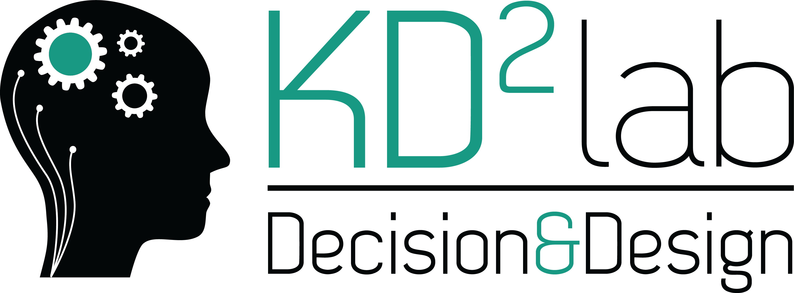

|

|
Ethikverfahren der KD2Lab Partner:innen für experimentelle StudienErste ChecklisteDas KD2Lab verwendet einen dreistufigen Prozess für die ethische Überprüfung: Ein Antrag, dem im Rahmen dieser Stufen keine Genehmigung erteilt werden kann, ist über das reguläre Verfahren der KIT Ethikkommission einzureichen. Die Überprüfung ist obligatorisch für alle Studien, die im KD2Lab oder von KD²Lab Partner:innen durchgeführt werden und muss darüber hinaus erfolgen für:
Jede Studie, die darüber hinausgeht, muss durch die Ethikkommission des KITs bewilligt werden. Die Durchführung von Studien in diesen Kategorien kann nicht beginnen, bevor eine ethische Zulassung erteilt wurde. Stellen Sie sicher, dass Sie ausreichend Zeit für den Genehmigungsprozess einplanen. Das KD²Lab ist nicht verantwortlich für Verzögerungen aufgrund kurzfristiger Einreichungen. Identifikation, anonyme und pseudonymisierte DatenDie Identifizierung von Daten ist möglich, wenn eine bestimmte Person identifiziert und/oder ihre Handlungen oder Entscheidungen zu verfolgt werden können, z.B. über Namen, E-Mail-Adressen oder demografische Daten (z. B. die 22-jährige muslimische Frau, die einen bestimmten Kurs studiert). Anonyme Daten sind nicht identifizierbar: Sie können nicht verwendet werden, um eine Person zu identifizieren. Vertrauliche Daten können identifiziert werden, aber der/die Experimentator:in garantiert, dass sie nicht über eine bestimmte Gruppe (in der Regel das Team der Experimentator:innen) weitergegeben werden. Es bestehen größere Verpflichtungen für die Erhebung und Verwaltung vertraulicher Daten als für anonyme Daten. Wenn der/die Experimentator:in identifizierende Daten sammelt, muss die DSGVO eingehalten werden. Wann wird das Checklisten-Verfahren hinreichend für die Studie sein?Die Checkliste ist für Studien, welche eindeutig keine ethischen Fragen aufwerfen. Beispiele hierfür sind:
Die Beantwortung von "Nein" auf alle Fragen in der folgenden Checkliste, führt zu einer automatischen Bewilligung Ihres Antrages und Sie erhalten ein entsprechendes Zertifikat. Nach einer Bewilligung auf den anderen Stufen des Verfahrens, können Sie auf der folgenden Seite ebenfalls ein Zertifikat auf Basis der entsprechenden Genehmigung erhalten. Beachten Sie, dass die Beantwortung der Checkliste wahrheitsgemäß zu erfolgen hat, Sie sich verpflichten die in der Erklärung für Experimentator:innen enthaltenen Laborregeln des KD²Labs einzuhalten und Sie für Änderungen an der Studie, die Ihre Angaben auf der Checkliste beeinflussen ein neues Verfahren beantragen bzw. die zuständigen Stellen des Labormanagements informieren müssen. Dies gilt auch für eine Genehmigung in den Verfahrensstufen 2 bis 3. Anzuhängende MaterialienSollte ein Verfahren über Stufe 1 hinaus notwendig werden, sollten Sie für eine zeitnahe Bearbeitung detaillierte Materialien bereitstellen, damit der/die Tandempartner:in Ihr vorgeschlagenes Experiment bewerten kann. Alle Materialien, die sich auf die Rekrutierung von Teilnehmer:innen beziehen, einschließlich der Art und Weise, wie die Teilnehmer:innen kontaktiert wurden, Informationsblätter, Zustimmungsformulare oder Debriefing-Materialien, müssen zur Verfügung gestellt werden. Außerdem dürfen alle Instrumente und Geräte, die sensible und/oder vertrauliche Informationen erfassen (Computer und Server zur Erhebung, Biosensorik etc.) ausschließlich von geschulten Experimentator:innen oder Mitarbeiter:innen (auf der folgenden Seite unter 10. aufzuführen) bedient werden. Darüber hinaus kann der Ausschuss Kopien anderer Materialien wie Anweisungen für die Teilnehmer:innen, Computer-Screenshots, Experimentierskripte usw. anfordern, falls diese für eine angemessene Bewertung der Studie erforderlich sind. Dauer der Genehmigung.Das Start- und Enddatum der Studie entspricht allen Phasen der Datenerfassung und -analyse. Wenn nach dem Enddatum zusätzliche Untersuchungen erforderlich sind (z. B. aufgrund einer Überarbeitung und erneuten Übermittlung in einer Zeitschrift, die zusätzliche Daten anfordert), müssen Sie sich vor der Wiederaufnahme der Forschung an den Ausschuss wenden, um eine Verlängerung der Genehmigung zu beantragen. Dazu gehört die Analyse von Daten mit vertraulichen Informationen, einschließlich personenbezogener Daten. Die Auswertung anonymisierter Daten kann ohne weitere Genehmigung nach dem Enddatum der Studie fortgesetzt werden. Spezielle Anleitung für KD²Lab-StudienWenn Sie eine Genehmigung für ein Experiment im KD²Lab beantragen, geben Sie dies in der Beschreibung der Studie an. Nach den Standard-KD²Lab-Protokollen für die Rekrutierung von Teilnehmer:innen, müssen im gesamten Auszahlungs- und Datenerhebungsprozess sowohl die ethischen, als auch Datenmanagement-Anforderungen eingehalten werden. Wenn Sie diese Standardprotokolle ändern oder Experimente an anderer Stelle ausführen, müssen Sie zusätzliche Informationen zu diesen Aspekten der Studie bereitstellen. Weiterführende Dokumente.Es liegt immer in Ihrer Verantwortung, die Forschungsethik, -prinzipien und -verfahren des KITs sowie alle relevanten akademischen oder beruflichen Richtlinien bei der Durchführung Ihrer Studie zu beachten und zu befolgen. Die folgenden Ressourcen können Ihnen dabei hilfreich sein:
|